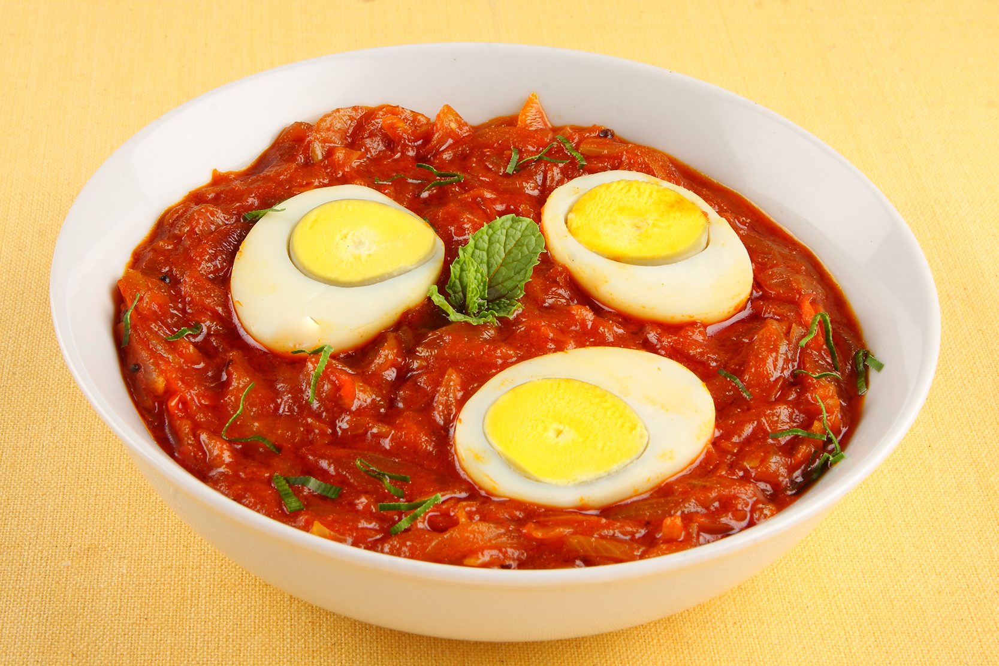

Bringing 11 Years of Professional Culinary Expertise from Kerala to Your Home
Meet the ChefMy mission is to bridge the gap between professional restaurant techniques and everyday home cooking. I created Chef Joseph's Kitchen to share the precise timing and professional secrets that I’ve mastered over 11 years in the hospitality industry. My goal is to empower you with the skills and curated tools needed to bring authentic, high-quality flavors to your own table with confidence.

Learn the professional browning techniques for perfect slow-cooked onions. This recipe brings authentic restaurant-quality flavor to your breakfast table.
Prep time: 10 mins | Expertise: Professional
View Full Recipe